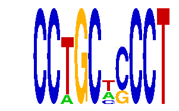

family_2 |
|---|
|  |
| Download PWM |
| Download instances (motifs) |
| Show motif distribution |
Query_ID | Query_Consensus | Subject_Name | Source_DB | Subject_ID | Length | Orientation | Offset | Divergence | Overlap | Subject_Consensus |
|---|---|---|---|---|---|---|---|---|---|---|
| family_2 | CCTGCWCCCT | CAGGTG | JASPAR | PF0012 | 6 | reverse-complement | -2 | 0.470 | 4 | CAGGTG |
| family_2 | CCTGCWCCCT | CAGGTA | JASPAR | PF0076 | 6 | reverse-complement | -2 | 0.470 | 4 | CAGGTA |
| family_2 | CCTGCWCCCT | RYTTCCTG | JASPAR | PF0016 | 8 | as given | -4 | 0.470 | 4 | ACTTCCTG |
Sequence | Start_position (from start) | Start_position (from end) | Average conservation | Best conservation score | Instance_with_best_CS | Best_Z-score | Instance_with_best_ZS | Strand |
|---|---|---|---|---|---|---|---|---|
| chr5:31208244-31209244 | 594 | 604 | 0.2919 | 0.745 | CCWGCWCCCT | 16.84381 | CCTGCWSCCT | 1 |
| chr10:61799459-61800459 | 108 | 118 | 0.0116 | 0.039 | CCTGCNCCCT | 12.710102 | CCTGCNCCCT | -1 |
| chr1:72229227-72230227 | 325 | 335 | 0.0094 | 0.02 | CCWGCWCCCT | 16.84381 | CCTGCWSCCT | 1 |
| chr14:104078739-104079739 | 595 | 605 | 0.0455 | 0.085 | CCWGCWCCCT | 16.84381 | CCTGCWSCCT | -1 |
| chr11:87823192-87824192 | 26 | 36 | 0.042 | 0.24 | CCTGCWSCCT | 16.84381 | CCTGCWSCCT | -1 |
| chr10:120309136-120310136 | 991 | 1001 | 0.0027 | 0.01 | CCWGCWCCCT | 16.84381 | CCWGCWCCCT | 1 |
| chr17:5057892-5058892 | 533 | 543 | 0.021 | 0.024 | CCWGCWCCCT | 16.84381 | CCWGCWCCCT | -1 |
| chr2:163764833-163765833 | 504 | 514 | 0.0012 | 0.003 | CCTGCWSCCT | 16.84381 | CCTGCWSCCT | -1 |
| chr14:66588950-66589950 | 85 | 95 | 0.0014 | 0.006 | CCTGCWSCCT | 16.84381 | CCWGCWCCCT | 1 |
| chr17:5057892-5058892 | 771 | 781 | 0.001 | 0.003 | CCTGCWSCCT | 16.84381 | CCTGCWSCCT | 1 |
| chr6:4287827-4288827 | 339 | 349 | 0.0013 | 0.003 | CCTGCWSCCT | 16.84381 | CCWGCWCCCT | 1 |
| chr8:28382682-28383682 | 349 | 359 | 0.005 | 0.01 | CCTGCNCCCT | 16.84381 | CCTGCWSCCT | 1 |
| chr7:4470526-4471526 | 134 | 144 | 0.2063 | 0.528 | CCTGCNCCCT | 16.84381 | CCTGCWSCCT | 1 |
| chr7:4466899-4467899 | 794 | 804 | 0.0309 | 0.066 | CCTGCNCCCT | 12.710102 | CCTGCNCCCT | 1 |
| chr7:51737452-51738452 | 375 | 385 | 0.012 | 0.018 | CCTGCNCCCT | 12.710102 | CCTGCNCCCT | 1 |
| chr4:134722044-134723044 | 968 | 978 | 0.064 | 0.087 | CCTGCNCCCT | 12.710102 | CCTGCNCCCT | -1 |
| chr13:34225188-34226188 | 184 | 194 | 0.9569 | 0.999 | CCTGCWSCCT | 16.84381 | CCTGCWSCCT | -1 |
| chr15:36538708-36539708 | 32 | 42 | 0.9999 | 1 | CCTGCNCCCT | 16.84381 | CCTGCWSCCT | 1 |
| chr6:3956194-3957194 | 418 | 428 | 0.0003 | 0.001 | CCTGCWSCCT | 12.710102 | CCTGCNCCCT | 1 |